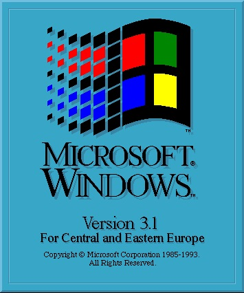

Willian Henry Gates, também conhecido como Bill Gates, CEO da Microsoft, nasceu em Seattle, que fica em Washington nos Estados Unidos no dia 28 de Outubro de 1955, Bill Gates vem de uma familia com historico bom, seu pai, William H. Gates era advogado, e sua mãe, Mary Maxwell Gates, professora, Bill Gates e suas irmãs estudaram nas melhores escolas de Seattle, desde cedo já havia interesse em programação de Jogos, e com 17 anos ele começou a trabalhar em programas de jogos, fliperamas especificamente, e junto com Paul Allen desenvolveu um software de leitura de fitas magnéticas. Criou, em parceria com o sócio, a empresa Traf-o-Data (seu principal objetivo era ler os dados brutos dos contadores de tráfego nas estradas e criar relatórios para os engenheiros de tráfego.), mas não demonstrou credibilidade aos clientes por conta da idade dos integrantes. Em 1973 ingressou em Harvard, mas abandonou os cursos de matemática e de direito em 1975, logo após junto com Paul Allen desenvolveu o sistema de interpretação de liguagem BASIC para o computador chamado Altair 8800, e com dinheiro de suas vendas fundaram a tão famosa Microsoft que popularizou os computadores particulares conhecidos como PCs Em 1977, a empresa líder no mercado de grandes computadores, a IBM, resolve entrar no mercado de microinformática com o PC, fechando contrato com a recém-criada Microsoft, que havia comprado por US$ 50 mil um programa desenvolvido para o processador Intel e depois de personalizar o programa o vendeu por US$ 8 milhões de forma personalizada, mantendo a licença do produto, criando o MS-DOS. A partir de então, a Microsoft foi se transformando em um império de programas eletrônicos.
Muita gente critica o fato da tela azul do Windows, mas não podemos negar que o Windows foi um feito muito grande para o desenvolvimento da Tecnologia. Segue abaixo imagem do windows 3.1 um dos mais famosos:
Popularizou o PC (Personal Computer) ou Computador Pessoal, além de nós proporcionar o grandioso Windows, e essa impressa gigante chamada Microsoft, ele fez com que chegasse a todos.
Bill Gates e Steve Jobs tinham uma relação complexa, e um pouco intensa, ja chegaram a trocar declarações agressivas podemos assim dizer, pórem em alguns momentos haveriam eles de trabalhar juntos, Bill Gates disponibilizou alguns softwares(Programas) para a Apple, assim poupando algumas linhas de código da Apple. Segue o Link do discurso:
Discurso Bill GatesNão podemos negar que Bill Gates realmente sabe como poupar e ganhar cada vez mais dinheiro, no comando da Microsoft ele o tornou umas das empresas mais valiosas (Um dos maiores polos da Informática)
Bill Gates, apesar de ser uma pessoa bilionaria, ele teve compaixão, e ajudou as pessoas necessitadas fundando a "Bill & Melinda Gates Foundation", administrada por Gates, sua esposa e o investidor Warren Buffett, que é dedicado a educação, já foi contribuido em cerca de 49$ Bilhões, aproximadamente metade do patrimônio pessoal de Gates.